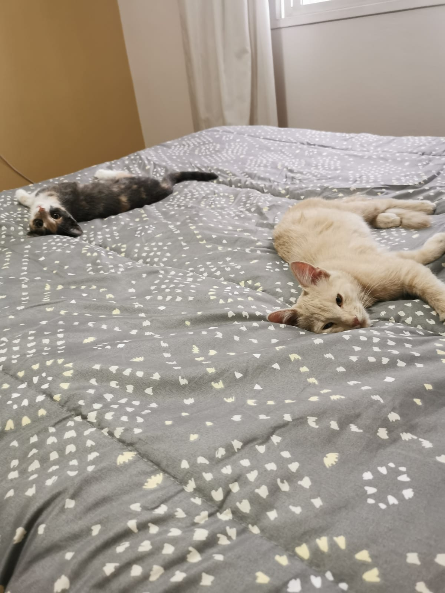

¿Te interesa nuestra página?
Subscríbete para recibir más información
Esta página está inspirada en mis dos gathijos Indiana y Nacho, mejor conocidos como Mindi y Gordo. Ellos me adoptaron como su humana para recibir de ellos nada más que amor, cariño y compañía.
Para quienes piensen que les desagradan las gatos o que prefieren a los perros... Les cuento que yo era exactamente así, por eso, el fin de esta web no es sólo hacer que se enamoren de estos seres peludos con cara bonita, sino también concientizar sobre todo lo que implica tener un gatito y dar información de cómo son realmente para que cada vez más personas quieran ser esas Karen tan amadas por nuestros michitos.
Mindi
Aqui hay amor
Gordo
Desde todo el amor de nuestro corazón con forma de gatito queremos compartirte todo lo que sabemos acerca de los gatos o, como nos gusta llamarlos de forma tierna, nuestros michitos peludos.
Vas a encontrar desde el nombre ideal para tu michi del amor y quizás un vistazo por su personalidad te puede hacer conocer mejor a tu compañero peludo, puede que te sorprenda, o no. Te ofrecemos además las mejores opciones de cuidados para que puedas hacerle sentir tu amor y cariño a través de toda la protección y buenos hábitos generados para tu gatito.
Si aún no tienes un compañero de cuatro patitas, deja que te convenza leyendo las razones para adoptar a un michito, no dudo que será reconpensado con muchisimo amor. Ya verás que todo puede ser muy alocado y nuevo al pricipio si recién ingresas en la vida de un gatito, pero luego lograrás apreciar lo hermoso que es compartir tus momentos con alguien como ellos.
Subscríbete para recibir más información
También puedes: